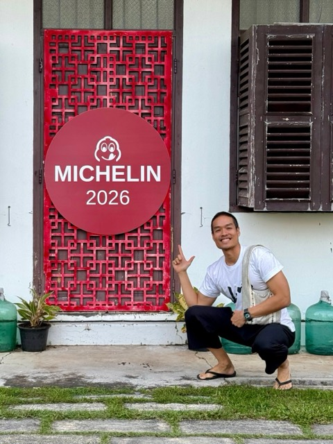
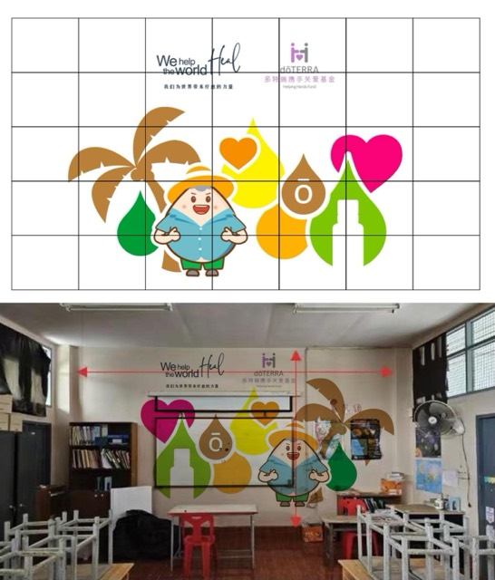

บันทึกปี 2569 2026
11 รายการ
บ้านอาจ้อ บ้านเก่า 86 ปีที่ยังมีชีวิตบ้าน·ตระกูล
ที่มา: The Cloudบ้านอาจ้อครบ 90 ปี ร้านโต๊ะแดงได้ Michelin 2026 และวิวทะลุ 6 ล้านรางวัล

+1 รูปในหน้าเหตุการณ์
โครงการ Dottera พัฒนาห้องเรียนโรงเรียนบ้านไม้ขาว ปีที่ 2สังคม
